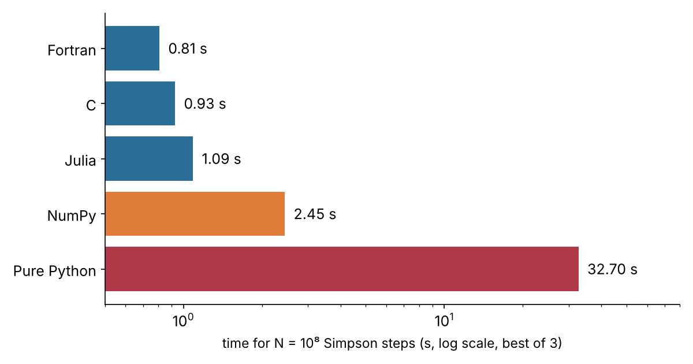
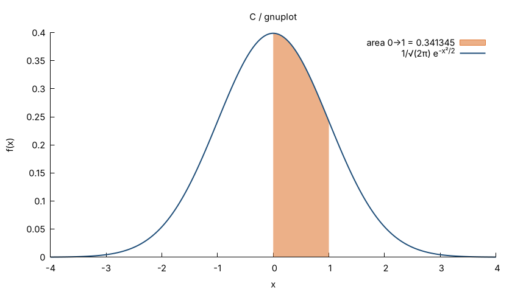
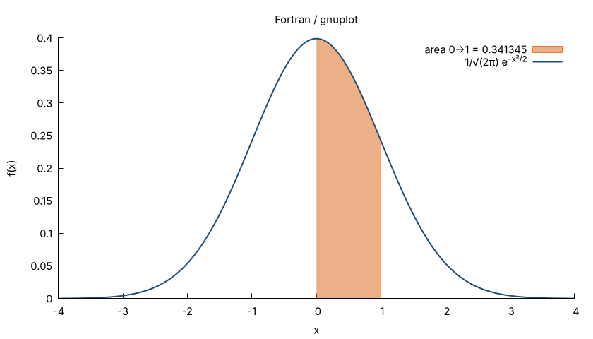
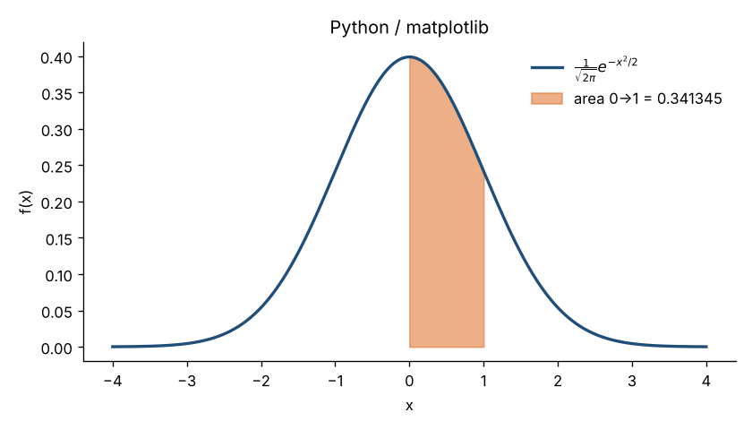
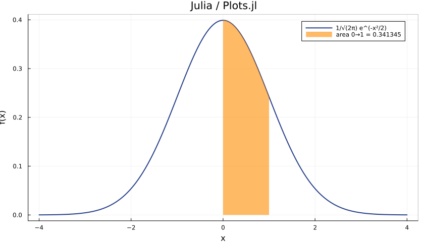

Same algorithm, four languages: how fast, how complex?
= Φ(1) − ½, the familiar “34.13 %” of the 68–95–99.7 rule.
Numerically: composite Simpson's rule, N = 10⁸ intervals, identical loop in every language.
// C
for (long i=1; i<n; i++)
s += f(a+i*h) * ((i&1) ? 4.0 : 2.0);
! Fortran do k = 1, n-1 s = s + merge(4d0,2d0,mod(k,2_8)==1)*f(a+k*h) end do
# Python
for i in range(1, n):
s += f(a+i*h) * (4.0 if i & 1 else 2.0)
# Julia
for i in 1:n-1
s += f(a+i*h) * (isodd(i) ? 4.0 : 2.0)
endPython/Julia: ~8 lines, read like the maths. C/Fortran: ~12–15 lines, explicit types and a compile step.

C ≈ Fortran ≈ Julia (~1 s): within noise, dominated by exp().
NumPy: ~2.5× slower (10⁸-element temporaries).
Pure Python: ~35× slower.
Shared 4-core cloud VM, timings noisy. Julia excludes JIT warm-up. Loop results 0.341344746068522: error 2·10⁻¹⁴ is naive-summation round-off; NumPy's pairwise sum is exact to all digits.




| Language | Tool | Wall time |
|---|---|---|
| C | gnuplot via popen | 0.06 s |
| Fortran | gnuplot via data file | 0.06 s |
| Python | matplotlib | ~1 s |
| Julia | Plots.jl (GR) | 3–4 s (startup + package load) |
ax.plot(x, g(x)); ax.fill_between(xs, g(xs), alpha=.6) # Python plot(x, g.(x)); plot!(xs, g.(xs), fillrange=0, fillalpha=.6) # Julia
C and Fortran have no native plotting: they hand the data to gnuplot.